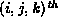
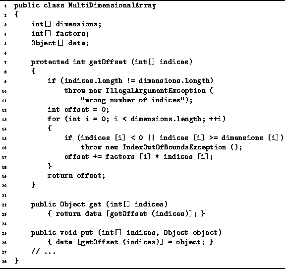

Data Structures and Algorithms
with Object-Oriented Design Patterns in Java
Data Structures and Algorithms
with Object-Oriented Design Patterns in JavaThe elements of a multi-dimensional array are indexed using the get and put methods. For example, you can access the  element of a three-dimensional array a like this:
a.get (new int[] {i, j, k});
and you can modify the element like this:
a.put (new int[] {i, j, k}, value);
Program  defines the methods get
and put as well as the method getOffset.
The getOffset method takes a set of n indices
and computes the position of the corresponding element
in the one-dimensional array according to Equation .
This computation takes O(n) time in the worst case,
where n is the number of dimensions.
Consequently, the running times of get and put are also O(n).
defines the methods get
and put as well as the method getOffset.
The getOffset method takes a set of n indices
and computes the position of the corresponding element
in the one-dimensional array according to Equation .
This computation takes O(n) time in the worst case,
where n is the number of dimensions.
Consequently, the running times of get and put are also O(n).

Program: MultiDimensionalArray methods.
 Copyright © 1998 by Bruno R. Preiss, P.Eng. All rights reserved.
Copyright © 1998 by Bruno R. Preiss, P.Eng. All rights reserved.